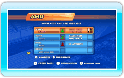
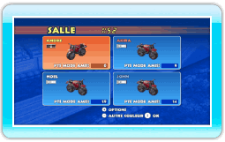
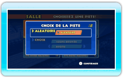
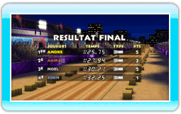

18 |
Mode amis |
 |
|
En mode amis, vous pouvez participer à des courses avec vos amis via la connexion Wi-Fi Nintendo.
L’écran des amis montre le statut des amis que vous avez enregistrés (voir ci-dessous). Afin de rejoindre une course, choisissez une salle ouverte et appuyez sur
 . Pour créer votre salle, appuyez sur . Pour créer votre salle, appuyez sur  et attendez que des amis vous y rejoignent. et attendez que des amis vous y rejoignent.
Vous pouvez choisir la couleur de votre moto sur l’écran des salles en appuyant sur
 . Appuyez sur pour confirmer. Si vous souhaitez quitter la salle, appuyez sur . Appuyez sur pour confirmer. Si vous souhaitez quitter la salle, appuyez sur  pour afficher le menu des options de la salle, puis sélectionnez QUITTER LA SALLE. pour afficher le menu des options de la salle, puis sélectionnez QUITTER LA SALLE.
Choisissez une piste dans la liste. Vous pouvez également laisser l’ordinateur choisir pour vous en sélectionnant ALEATOIRE. La piste de la course sera ensuite tirée au sort parmi les choix des joueurs présents.
 A la fin de la course, vous gagnez des points mode amis en fonction de vos résultats. Les points mode amis permettent de débloquer de nouveaux motifs pour votre moto.
|
 |
 |
 |